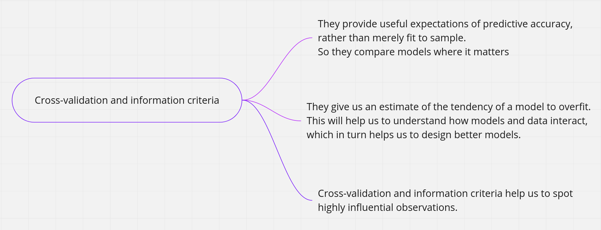
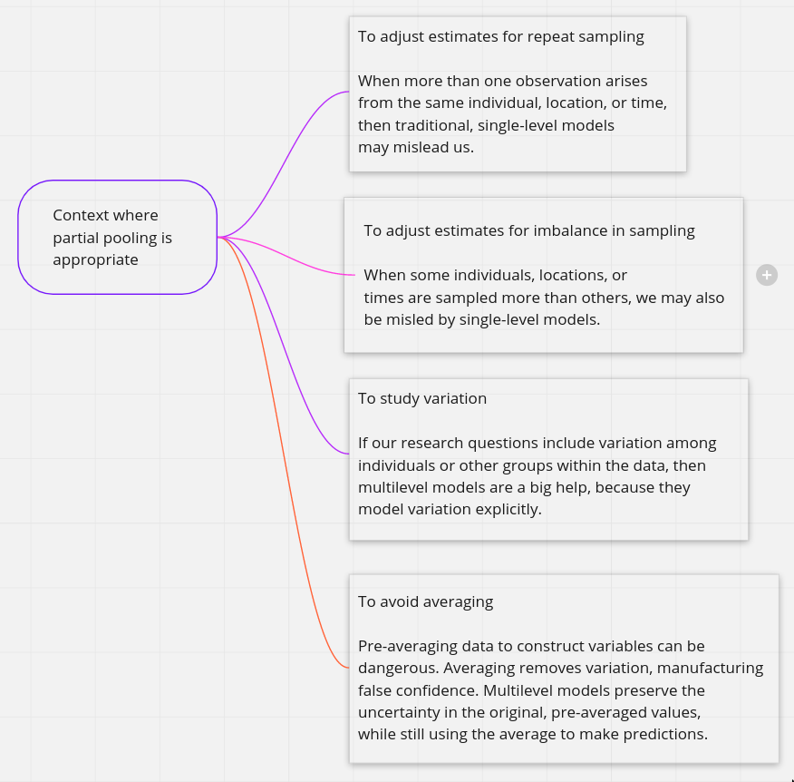

Statistical rethinking
2021-07-07
Chapter 1 Statistical Golems
A golem (goh-lem) is a clay robot from Jewish folklore, constructed from dust and fire and water. It is brought to life by inscribing emet, Hebrew for “truth,” on its brow. Animated by truth, but lacking free will, a golem always does exactly what it is told. This is lucky, because the golem is incredibly powerful, able to withstand and accomplish more than its creators could. However, its obedience also brings danger, as careless instructions or unex- pected events can turn a golem against its makers. Its abundance of power is matched by its lack of wisdom.
There are many kinds of statistical models. Whenever someone deploys even a simple statistical procedure, like a classical t-test, she is deploying a small golem that will obediently carry out an exact calculation, performing it the same way (nearly 2 ) every time, without complaint. Nearly every branch of science relies upon the senses of statistical golems. In many cases, it is no longer possible to even measure phenomena of interest, without making use of a model. To measure the strength of natural selection or the speed of a neutrino or the number of species in the Amazon, we must use models. The golem is a prosthesis, doing the measuring for us, performing impressive calculations, finding patterns where none are obvious.
However, there is no wisdom in the golem. It doesn’t discern when the context is inap- propriate for its answers. It just knows its own procedure, nothing else. It just does as it’s told. And so it remains a triumph of statistical science that there are now so many diverse golems, each useful in a particular context. Viewed this way, statistics is neither mathematics nor a science, but rather a branch of engineering. And like engineering, a common set of design principles and constraints produces a great diversity of specialized applications.
The classical procedures of introductory sta- tistics tend to be inflexible and fragile. By inflexible, I mean that they have very limited ways to adapt to unique research contexts. By fragile, I mean that they fail in unpredictable ways when applied to new contexts. This matters, because at the boundaries of most sciences, it is hardly ever clear which procedure is appropriate. None of the traditional golems has been evaluated in novel research settings, and so it can be hard to choose one and then to understand how it behaves. A good example is Fisher’s exact test, which applies (exactly) to an extremely narrow empirical context, but is regularly used whenever cell counts are small. I have personally read hundreds of uses of Fisher’s exact test in scientific journals, but aside from Fisher’s original use of it, I have never seen it used appropriately. Even a procedure like ordinary linear regression, which is quite flexible in many ways, being able to encode a large diversity of interesting hypotheses, is sometimes fragile. For example, if there is substan- tial measurement error on prediction variables, then the procedure can fail in spectacular ways. But more importantly, it is nearly always possible to do better than ordinary linear regression, largely because of a phenomenon known as overfitting.
Furthermore, no statistical tool does anything on its own to address the basic problem of inferring causes from evidence. Statistical golems do not understand cause and effect. They only understand association. Without our guidance and skepticism, pre-manufactured golems may do nothing useful at all. Worse, they might wreck Prague.
What researchers need is some unified theory of golem engineering, a set of principles for designing, building, and refining special-purpose statistical procedures. Every major branch of statistical philosophy possesses such a unified theory. But the theory is never taught in introductory—and often not even in advanced—courses. So there are benefits in rethinking statistical inference as a set of strategies, instead of a set of pre-made tools.
1.1 Tools for golem engineering
If you want to reduce your chances of wrecking Prague, then some golem engineering know-how is needed. Make no mistake: You will wreck Prague eventually. But if you are a good golem engineer, at least you’ll notice the destruction. And since you’ll know a lot about how your golem works, you stand a good chance to figure out what went wrong. Then your next golem won’t be as bad. Without engineering training, you’re always at someone’s mercy. We want to use our models for several distinct purposes: designing inquiry, extracting information from data, and making predictions. In this book I’ve chosen to focus on tools to help with each purpose. These tools are:
- Bayesian data analysis
- Model comparison
- Multilevel models
- Graphical causal models
These tools are deeply related to one another, so it makes sense to teach them together. Un- derstanding of these tools comes, as always, only with implementation—you can’t compre- hend golem engineering until you do it. And so this book focuses mostly on code, how to do things. But in the remainder of this chapter, I provide introductions to these tools.
1.2 Bayesian data analysis
Supposing you have some data, how should you use it to learn about the world? There is no uniquely correct answer to this question. Lots of approaches, both formal and heuristic, can be effective. But one of the most effective and general answers is to use Bayesian data analysis. Bayesian data analysis takes a question in the form of a model and uses logic to produce an answer in the form of probability distributions. In modest terms, Bayesian data analysis is no more than counting the numbers of ways the data could happen, according to our assumptions. Things that can happen more ways are more plausible. Probability theory is relevant because probability is just a calculus for counting. This allows us to use probability theory as a general way to represent plausibility, whether in reference to countable events in the world or rather theoretical constructs like parameters. The rest follows logically. Once we have defined the statistical model, Bayesian data analysis forces a purely logical way of processing the data to produce inference. Bayesian data analysis is just a logical procedure for processing information.
More generally, Bayesian golems treat “randomness” as a property of information, not of the world. Nothing in the real world—excepting controversial interpretations of quantum physics—is actually random. Presumably, if we had more information, we could exactly predict everything. We just use randomness to describe our uncertainty in the face of incomplete knowledge.
1.3 Model comparison and prediction
If we wish to make good predictions, we cannot judge our models simply on how well they fit our data. Fitting is easy; prediction is hard.
Bayesian data analysis provides a way for models to learn from data. But when there is more than one plausible model—and in most mature fields there should be—how should we choose among them? One answer is to prefer models that make good predictions. This answer creates a lot of new questions, since knowing which model will make the best predictions seems to require knowing the future. We’ll look at two related tools, neither of which knows the future: cross-validation and information criteria. These tools aim to compare models based upon expected predictive accuracy.
Cross-validation and information criteria help us in three ways. First, they provide use- ful expectations of predictive accuracy, rather than merely fit to sample. So they compare models where it matters. Second, they give us an estimate of the tendency of a model to overfit. This will help us to understand how models and data interact, which in turn helps us to design better models. We’ll take this point up again in the next section. Third, cross- validation and information criteria help us to spot highly influential observations.

1.4 Multilevel models
n an apocryphal telling of Hindu cosmology, it is said that the Earth rests on the back of a great elephant, who in turn stands on the back of a massive turtle. When asked upon what the turtle stands, a guru is said to reply, “it’s turtles all the way down.” Statistical models don’t contain turtles, but they do contain parameters. And parameters support inference. Upon what do parameters themselves stand? Sometimes, in some of the most powerful models, it’s parameters all the way down. What this means is that any particular parameter can be usefully regarded as a placeholder for a missing model. Given some model of how the parameter gets its value, it is simple enough to embed the new model inside the old one. This results in a model with multiple levels of uncertainty, each feeding into the next—a multilevel model.
One reason to be interested in multilevel models is because they help us deal with over- fitting. Cross-validation and information criteria measure overfitting risk and help us to recognize it. Multilevel models actually do something about it. What they do is exploit an amazing trick known as partial pooling that pools information across units in the data in order to produce better estimates for all units.

1.5 Graphical causal models.
When the wind blows, branches sway. If you are human, you immediately interpret this statement as causal: The wind makes the branches move. But all we see is a statistical association. From the data alone, it could also be that the branches swaying makes the wind. That conclusion seems foolish, because you know trees do not sway their own branches. A statistical model is an amazing association engine. It makes it possible to detect associations between causes and their effects. But a statistical model is never sufficient for inferring cause, because the statistical model makes no distinction between the wind causing the branches to sway and the branches causing the wind to blow. Facts outside the data are needed to decide which explanation is correct.
So what can be done? What is needed is a causal model that can be used to design one or more statistical models for the purpose of causal identification. As I mentioned in the neu- tral molecular evolution example earlier in this chapter, a complete scientific model contains more information than a statistical model derived from it. And this additional information contains causal implications. These implications make it possible to test alternative causal models. The implications and tests depend upon the details.
Unfortunately, much scientific work lacks such precise models. Instead we must work with vaguer hypotheses and try to estimate vague causal effects. But the very good news is that even when you don’t have a precise causal model, but only a heuristic one indicating which variables causally influence others, you can still do useful causal inference.